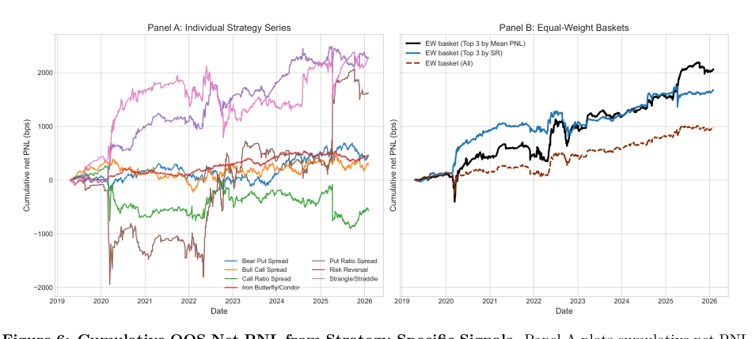

บท 0011: ผล OOS ที่ paper บอกว่าใช้ได้คืออะไร
Table 10-11 คือจุดที่ paper ตอบคำถามว่า conditional rules มี economic value หลังต้นทุนไหม
1. อ่าน Table 10: strategy-specific OOS
Table 10 ใช้ logistic benchmark แยกทีละ strategy ไม่ pool ข้าม strategy และใช้ representative moneyness จาก Table 8
สิ่งที่รายงานมี hit rate, Brier score, calibration slope, mean net PNL, Sharpe net และจำนวน OOS observations
2. ตัวเลขเด่นใน Table 10
Put ratio spread
expanding spec: mean net ประมาณ 2.58 bps, Sharpe net 1.26. เป็น individual strategy ที่เด่นที่สุดใน table
Iron butterfly/condor
Sharpe net ประมาณ 0.82. ไม่ใช่สูงสุด แต่ยังน่าสนใจเมื่อเทียบกับหลาย strategy อื่น
Call ratio spread
ยัง unattractive ใน paper. นี่สำคัญ เพราะแปลว่า model ไม่ได้ทำให้ทุกอย่างดูดี
3. Hit rate สูงไม่พอ
บาง strategy อาจ hit rate สูง แต่ mean net หรือ Sharpe ไม่ดี เพราะวันที่ผิดอาจเสียหนักกว่าวันที่ถูก
นี่เป็นเหตุผลที่ paper ไม่ดู hit rate อย่างเดียว แต่ดู mean net, Sharpe, ES1%, worst day และ max drawdown ด้วย
4. อ่าน Table 11: investment series และ baskets
Table 11 ใช้ rolling 252-day signals แล้วสร้าง daily OOS strategy returns
ที่น่าสนใจคือ equal-weight baskets: top-three by SR net ได้ Sharpe ประมาณ 1.27, top-three by mean PNL ได้ 1.17, และ all-strategies basket ได้ 1.01

5. ทำไม basket ดีขึ้น
แต่ละ strategy มีวันที่แย่ไม่เหมือนกัน การ equal-weight หลาย strategy จึงช่วยลด strategy-specific drawdown
แต่ basket ไม่ได้ลบ tail risk ทั้งหมด มันแค่ทำให้ evidence ดูเป็น portfolio object มากกว่าชุดผลลัพธ์แยกเดี่ยว
6. แปลคำว่า selective timing
7. Retrieval
strategy เด่นสุดใน Table 10 คืออะไร?
put ratio spread โดยเฉพาะ expanding specification ที่ Sharpe net ประมาณ 1.26
ทำไม hit rate สูงอย่างเดียวไม่พอ?
เพราะขนาดกำไรขาดทุนไม่เท่ากัน วันที่ผิดอาจเสียมากกว่าวันที่ถูกหลายเท่า
basket ช่วยอะไรใน Table 11?
ช่วยลด strategy-specific drawdown และทำให้ผล conditional timing เป็น portfolio series ที่ตีความง่ายขึ้น
ต่อไป: 0012 Final Synthesis